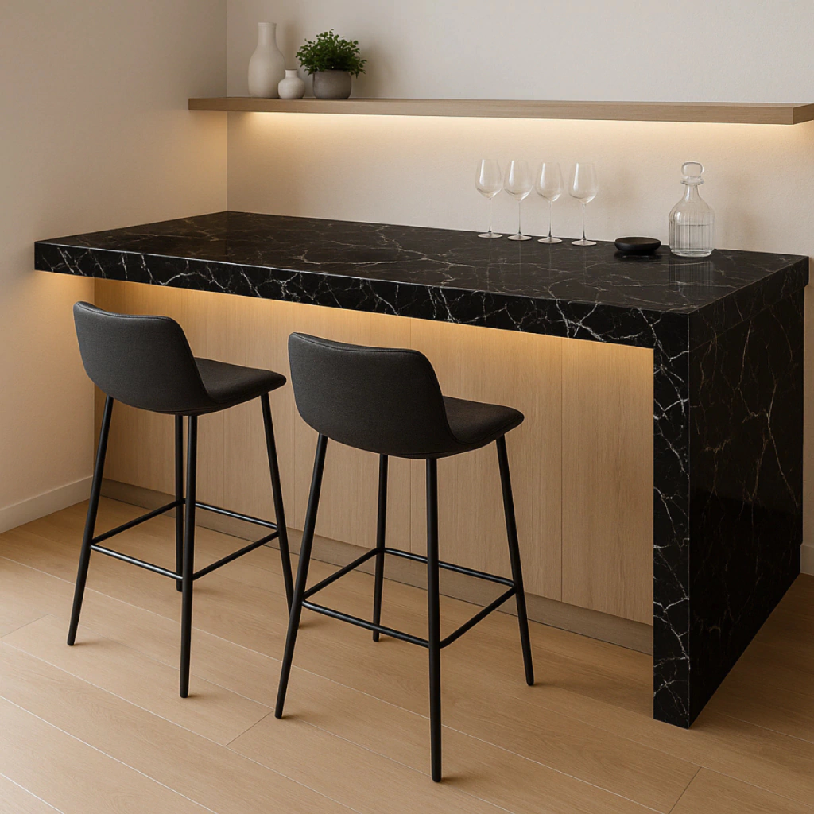

Vinilos
Vinilo Subway Negro
Vinilo autoadhesivo decorativo para renovar paredes, muebles y otras superficies lisas.
- Formato
- 500 X 60 CM
- Disponibilidad
- Sujeta a confirmación
- Modalidad
- Compra directa
- Presentación
- Caja de 5 unidades
Precio y disponibilidadConsultar precio
Te ayudamos a calcular cantidades, accesorios y desperdicio antes de confirmar el pedido.